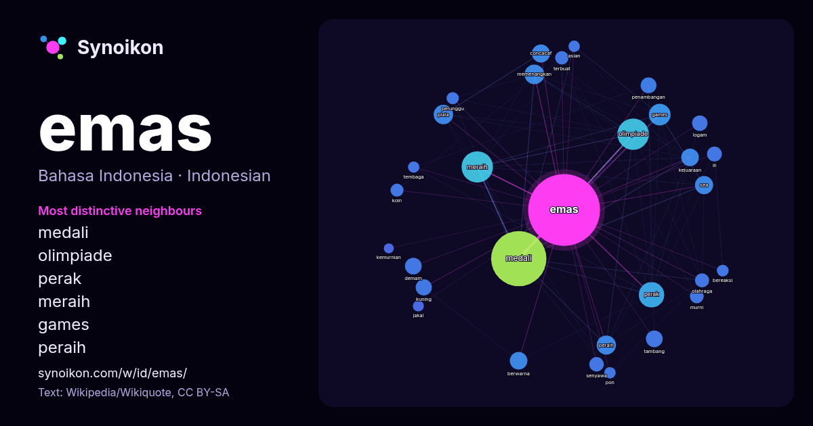

Bahasa Indonesia · daftar kata hari ini
emas
“gold” · Kata-kata di sekitarnya dalam 1274 kemunculan dari Wikipedia, Wikiquote.

Tetangga paling khas
- medali 164×
- olimpiade 66×
- perak 43×
- meraih 39×
- games 37×
- peraih 35×
- concacaf 32×
- sea 30×
- demam 25×
- penambangan 24×
- tambang 22×
- piala 22×
- kejuaraan 18×
- kuning 16×
- memenangkan 15×
- murni 14×
- koin 14×
- logam 14×
- senyawa 14×
- perunggu 13×
× = berapa kali lebih sering daripada di teks Wikipedia umum.
Tetangga paling sering
- medali 306
- meraih 99
- olimpiade 99
- perak 65
- indonesia 63
- games 47
- berhasil 44
- memenangkan 39
- piala 38
- peraih 37
- dunia 36
- concacaf 33
- sea 33
- berwarna 31
- kejuaraan 31
- bahasa 28
- demam 28
- memiliki 28
- tambang 28
- kuning 26
Dalam konteks
- Emas adalah sebuah unsur kimia dengan lambang Au (dari bahasa Latin aurum, artinya "emas") dan nomor atom 79. Dalam bentuknya yang murni, emas menampilkan Wikipedia snippets · Emas
- Ashrifah menjadi atlet panahan pertama Indonesia yang berhasil meraih medali emas di Pesta Olahraga Asia. Penerbangan 1073 Flydubai mendarat di Tabuk, Arab Wikipedia snippets · Halaman Utama
- Dalam matematika, dua nilai dianggap berada dalam hubungan rasio emas ( φ {\displaystyle \varphi } ) jika rasio antara jumlah kedua nilai itu terhadap Wikipedia snippets · Rasio emas
- standar emas, sertifikat menawarkan cara yang lebih nyaman untuk membayar dengan emas daripada menggunakan koin. Kepemilikan pribadi atas sertifikat emas dilarang Wikipedia snippets · Sertifikat emas (Amerika Serikat)
- Kuning emas (bahasa Inggris: Goldcode: en is deprecated ) adalah warna kuning yang terlihat seperti warna emas. Warna ini digunakan dalam bendera negara-negara Wikipedia snippets · Kuning emas
- Tabungan emas merupakan layanan pembelian dan penjualan emas dengan menggunakan fasilitas titipan dengan harga yang terjangkau. Layanan ini akan mempermudah Wikipedia snippets · Tabungan emas
- pengukuran tingkat kemurnian emas. Kemurnian emas diukur berdasarkan jumlah persentase emas murni yang terkandung dalam suatu logam. Emas dikenal sebagai logam Wikipedia snippets · Karat (emas)
- dalam dilapisi dengan lapisan emas, di mana ada pahatan ksatria yang semuanya terbuat dari emas, yang memiliki lingkaran emas besar di sekitar kepala mereka Wikipedia snippets · Majapahit
Kata lainnya
- air
- anjing
- bahasa
- iklim
- jantung
- jembatan
- kebenaran
- kehidupan
- kekuasaan
- keluarga
- kematian
- kereta
- kerja
- kesehatan
- kesenian
- kucing
- lingkungan
- makanan
- sains
- sejarah
- tuhan
- uang
Dihitung sebelumnya pada 2026-10-09 dengan pengaturan bawaan (±5 kata, korpus sedang). Peta interaktif dapat memperbaruinya dengan data langsung.
Antarmuka diterjemahkan mesin; koreksi dipersilakan.